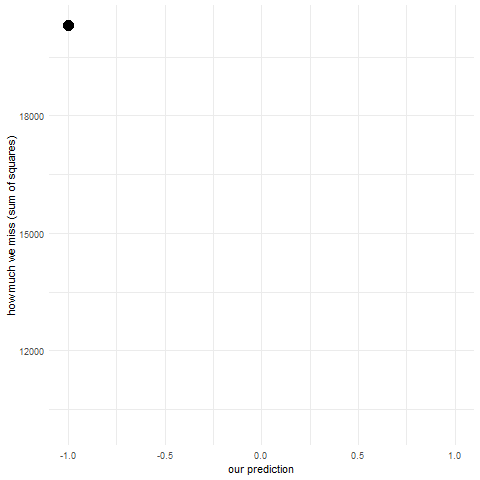

y <- rnorm(1000)Regression
Regression analysis
What type of problems are we talking about?
-What is a regression analysis?
Prediction and inference
Regression analysis is often described in two ways. One of them talks about how to predict a value of variable of interest given a set of other variables. The other context focuses on inference: which variables are in fact related to a variable of interest.
Housing market example: imagine you work in a real estate agency selling houses. You track information on a number of characteristics of each house: their price, size, number of rooms, distance from city center and various facilities etc. You might be interested in predicting the price of a house as accurately as possible given all the characteristics of a house. You might also be interested in how various characteristics of a house relate to its price so as to know what to focus on.
Regression engine
The very idea of making a regression analysis is ultimately an optimization problem. We want to reexpress the relations between variables so as to be able to express one of them as a combination of the other ones.
Making a guess:
So, we know we need to optimize our prediction - we want to make the best guess possible. But what does it mean ‘the best guess possible’? We need some rule on what it would mean to make a best guess. Since we are predicting a continuous variable we can calculate how much we miss for every prediction (subtract the actual value from the predicted value) and then choose the one that has the smallest error. This is already a start but we can miss in two ways: we can predict too little or too much. The first one is going to produce a negative error and the other one a positive one. Negative numbers are smaller than positive ones so our rule so far will always favor predicting too little! Fortunately there is a very easy way to deal with this - we can square the errors (there are reasons why squaring is preferred to taking absolute values but they are beyond the scope of this course). Now, we can sum all the squared errors for each observation in our dataset. The prediction that gets the smallest sum of squared errors wins! This is pretty much how the Ordinary Least Squares (OLS) regression works.
Lets start with the simplest example possible. Lets say we have no other information except our variable that we want to predict. Which value will minimize the sum of squared errors? There’s actually a fancy formula for this because OLS regression has a closed form but perhaps a better way to learn this is to actually make a bunch of guesses and see what happens. This is what simulation is perfect for.
Lets first simulate a bunch of observations from a normal distribution: our dependent variable. We will keep mean = 0 and standard deviation = 1.
Next, we’ll make a bunch of guesses and see how each of them performs (what is their sum of squared errors)
sse <- c() #initialize vector to store sum of squared errors
pred <- seq(-1,1,length.out = 10) #we'll make 10 guesses from -1 to 1, equally spaced
for (i in pred) {
res <- sum((i - y)^2) # for each guess calculate sum of squared errors
sse <- c(sse, res) #append the sum to the vector
}
pred_sse <-data.frame(pred,sse) #put these You can go ahead and inspect the sse and pred. Can you see for which guess we get the smallest error? You can also look at the animation below:

You can see that the points fall on a really nice parabola. For a guess of mean - 1 standard deviation we get a really big sum of squared errors, they gradually get smaller and smaller and then start to get bigger up to mean + 1 standard deviation. The lowest point of the parabola is at the mean and that is in fact our best guess. When making regression analysis we will be working with means all the time. We’ll just be adding more information to the model (e.g. if we add belonging to experimental vs control group into the model, then our best guess will be the mean in each of those groups and we get a two sample t-test).
A more general way which we can use to think about linear models is that we are modelling Y as following a normal distribution with mean \(\mu\) and variance \(\sigma\). The mean is then determined by the variables we put into the model. If we don’t add anything \(\mu\) is going to be the actual mean in our sample. If we start adding variables into the model then \(\mu_i\) will be determined by them (that’s why we have the i).
\[ Y_i \sim Normal(\mu_i, \sigma) \\ \mu_i =\alpha \]
Making a simple regression
-how to make a regression analysis
-how to look at the results
Multiple regression
-how to make it
-Why you should always think first: putting things into regression